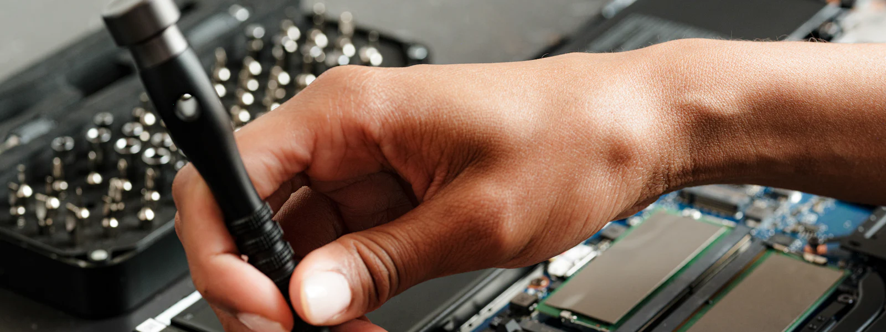

Dépannage informatique à Menton et sur la Riviera est
De Garavan à Carnolès, nous intervenons à domicile et dans les entreprises de Menton, Roquebrune-Cap-Martin et Beausoleil. Et quand le déplacement n'est pas nécessaire, nous réglons votre problème à distance, en toute sécurité.
Un informaticien patient, à domicile à Menton
Beaucoup de nos clients mentonnais souhaitent avant tout être accompagnés : comprendre leur ordinateur, rester en contact avec leurs proches par appel vidéo, gérer leurs photos ou faire leurs démarches en ligne sans stress. Nous prenons le temps qu'il faut, sans jargon.
Nous intervenons aussi pour tous les dépannages classiques : ordinateur lent, virus ou faux message d'alerte, box internet, imprimante, télévision connectée, tablette et smartphone.
En savoir plus sur l'assistance aux particuliersInformatique pour les commerces et entreprises mentonnais
Commerces de la rue Saint-Michel, hôtels et locations saisonnières, agences immobilières, cabinets médicaux : nous installons et entretenons vos postes, votre réseau et votre Wi-Fi client, et nous sécurisons vos données.
Avec un contrat de maintenance, la majorité des demandes est traitée à distance en quelques minutes, et nous planifions les interventions sur site à Menton quand elles sont nécessaires.
Découvrir l'offre entreprisesQuartiers et communes desservis autour de Menton
Nous intervenons dans tous les quartiers de Menton et sur l'ensemble de la Riviera est, jusqu'à la frontière italienne.

- Vieille ville
- Garavan
- Carnolès
- Borrigo
- Careï
- Centre-ville
- Roquebrune-Cap-Martin
- Monaco
- Beausoleil
- Cap-d'Ail
- Gorbio
- Sainte-Agnès
- Castellar
Nous intervenons aussi à Nice, Saint-Laurent-du-Var, Cagnes-sur-Mer. Voir toute notre zone d'intervention.
Nos services informatiques à Menton
Particuliers ou professionnels, de Garavan à Roquebrune-Cap-Martin : voici les interventions que l'on nous demande le plus souvent.
Pour les particuliers
Dépannage informatique à Menton : vos questions
Vous déplacez-vous vraiment jusqu'à Menton ?
Oui, nous intervenons régulièrement à Menton et dans les communes voisines, sur rendez-vous. Les déplacements sont planifiés à l'avance : pensez à nous appeler dès que possible pour réserver un créneau.
Y a-t-il des frais de déplacement pour Menton ?
Les frais éventuels de déplacement vous sont toujours annoncés avant le rendez-vous, sans surprise. Consultez notre page Tarifs ou appelez-nous pour un devis gratuit.
J'ai reçu un message disant que mon ordinateur est bloqué, que faire ?
Ne rappelez surtout pas le numéro affiché et ne donnez aucun accès à votre ordinateur : c'est une arnaque au faux support technique. Éteignez le navigateur, puis contactez-nous : nous vérifions et nettoyons votre ordinateur.

Un problème informatique à Menton ?
Appelez-nous pour un diagnostic gratuit par téléphone et un rendez-vous rapide.